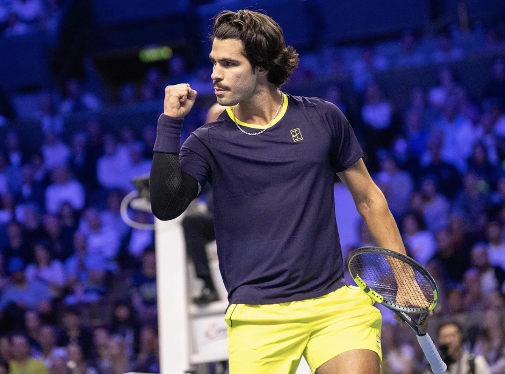

Alcaraz supera a Khachanov en su estreno en Viena
El español se impone por 6-4 y 7-6(5) en su debut, desperdicia tres bolas de partido y necesita el desempate para cerrar una victoria útil para ganar ritmo tras su lesión.
Carlos Alcaraz ha certificado su avance a la segunda ronda del Open 500 de Viena, donde se enfrentará al vencedor del choque del próximo miércoles entre Rodionov y Basilashvili. Por el momento, se desconoce el horario del partido de segunda ronda, a la espera de que se conozcan los cruces definitivos.
